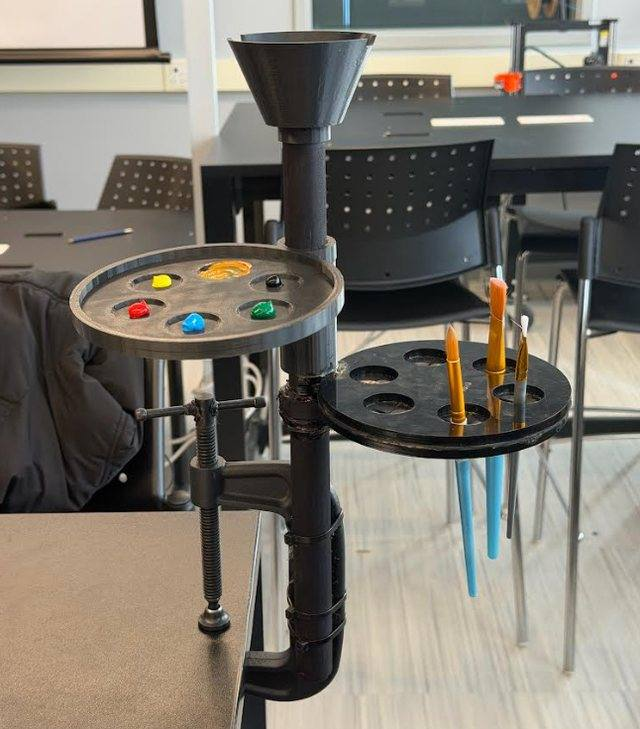
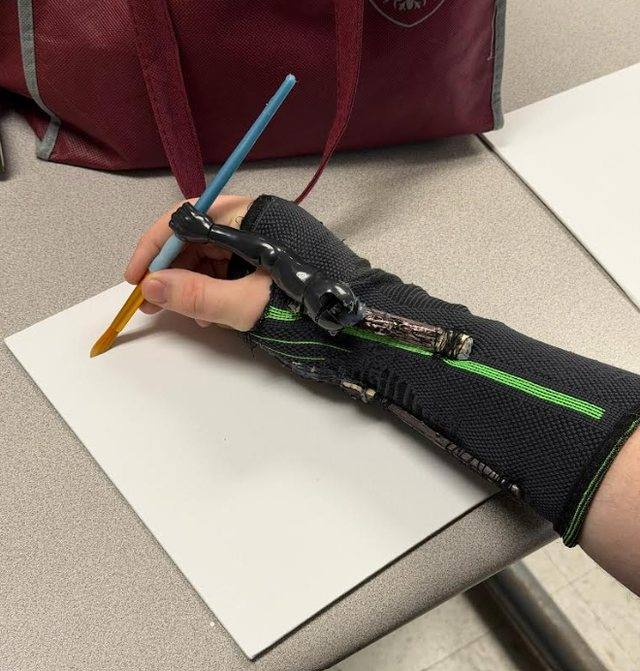

Painters Pall
An assistive painting system designed with a team for a client who uses a wheelchair and has limited hand dexterity: a clamp-mounted palette and brush tray, plus a paintbrush support glove. I was the team's Coordinator.

Course project: Power in Community.
Photos

Overview
Our team was challenged to design an assistive device for a client who uses a wheelchair, has limited hand dexterity and has a strong passion for the arts. An assistive device is a tool that helps a person do a task more easily, safely or independently.
My role
As Coordinator, I organized and led our out-of-studio meetings, documented every discussion and kept the team logbook that tracked how our design ideas evolved week to week. I was also the main driver of our early gardening-based concept, including an adjustable handle and interchangeable arm-strap attachment.
The pivot
At Milestone 2, while reviewing the client's student FAQ, I found that gardening was not an area where they needed help. Because I had been recording our meetings and progress, I could see how far our work had drifted from the client's real needs. I took the initiative to redirect the team, reframing the grip-support and tool-control ideas we had already explored around painting and art-making. That became our final solution: a wheelchair tray and a paintbrush support glove.
What I learned
Early problem statements are hypotheses, not facts. Documenting a direction is not the same as validating it, and the person keeping the record shapes what the team believes it has already decided.
Next time I would build assumption-checking moments into meetings, use notes as a questioning tool and argue against my own proposals once before the team commits. The goal is not to be right from the start, but to build a process that makes it safe, and fast, to be wrong early.